Last updated: 2026-03-30
Checks: 5 2
Knit directory: PIPAC_spatial/
This reproducible R Markdown analysis was created with workflowr (version 1.7.1). The Checks tab describes the reproducibility checks that were applied when the results were created. The Past versions tab lists the development history.
The R Markdown file has unstaged changes. To know which version of
the R Markdown file created these results, you’ll want to first commit
it to the Git repo. If you’re still working on the analysis, you can
ignore this warning. When you’re finished, you can run
wflow_publish to commit the R Markdown file and build the
HTML.
Great job! The global environment was empty. Objects defined in the global environment can affect the analysis in your R Markdown file in unknown ways. For reproduciblity it’s best to always run the code in an empty environment.
The command set.seed(20240917) was run prior to running
the code in the R Markdown file. Setting a seed ensures that any results
that rely on randomness, e.g. subsampling or permutations, are
reproducible.
Great job! Recording the operating system, R version, and package versions is critical for reproducibility.
Nice! There were no cached chunks for this analysis, so you can be confident that you successfully produced the results during this run.
Using absolute paths to the files within your workflowr project makes it difficult for you and others to run your code on a different machine. Change the absolute path(s) below to the suggested relative path(s) to make your code more reproducible.
| absolute | relative |
|---|---|
| /home/hnatri/PIPAC_spatial/ | . |
| /home/hnatri/PIPAC_spatial/code/PIPAC_colors_themes.R | code/PIPAC_colors_themes.R |
| /home/hnatri/PIPAC_spatial/code/plot_functions.R | code/plot_functions.R |
Great! You are using Git for version control. Tracking code development and connecting the code version to the results is critical for reproducibility.
The results in this page were generated with repository version 5d0a83d. See the Past versions tab to see a history of the changes made to the R Markdown and HTML files.
Note that you need to be careful to ensure that all relevant files for
the analysis have been committed to Git prior to generating the results
(you can use wflow_publish or
wflow_git_commit). workflowr only checks the R Markdown
file, but you know if there are other scripts or data files that it
depends on. Below is the status of the Git repository when the results
were generated:
Ignored files:
Ignored: PDX_CAF_cluster_markers.tsv
Ignored: PDX_CAF_nonimmune_cluster_markers.tsv
Ignored: cell_annotation_final_topmarkers.tsv
Ignored: cell_immune_cluster_marker_annotations.tsv
Ignored: cell_nonimmune_cluster_marker_annotations.tsv
Ignored: celltype_markers.tsv
Ignored: code/.RData
Ignored: code/.Rapp.history
Ignored: code/.Rhistory
Ignored: code/Proximity_analysis/.DS_Store
Ignored: code/Proximity_analysis/data/
Ignored: code/Proximity_analysis/output/
Ignored: code/RSC_latest_EDM_2025-08-06/
Ignored: code/scGSEA_CAFs.Rout
Ignored: immune_cluster_marker_annotations_2ndpass.tsv
Ignored: immune_prelim_annot_topmarkers.tsv
Ignored: nonimmune_cluster_marker_annotations_2ndpass.tsv
Ignored: nonimmune_prelim_annot_topmarkers.tsv
Ignored: output/proximity_compiled.tsv
Ignored: output/tumor_proximity_compiled.tsv
Ignored: tumor_posttreatment_proximity_compiled.tsv
Ignored: tumor_pretreatment_proximity_compiled.tsv
Ignored: tumor_proximity_compiled.tsv
Unstaged changes:
Modified: analysis/immune_analysis.Rmd
Modified: analysis/updating_annotations.Rmd
Modified: code/anndata_to_seurat.R
Note that any generated files, e.g. HTML, png, CSS, etc., are not included in this status report because it is ok for generated content to have uncommitted changes.
These are the previous versions of the repository in which changes were
made to the R Markdown (analysis/immune_analysis.Rmd) and
HTML (docs/immune_analysis.html) files. If you’ve
configured a remote Git repository (see ?wflow_git_remote),
click on the hyperlinks in the table below to view the files as they
were in that past version.
| File | Version | Author | Date | Message |
|---|---|---|---|---|
| Rmd | 548478b | heinin | 2026-03-20 | Added EMT markers to mouse fibro analysis |
| Rmd | cbf7742 | heinin | 2026-03-13 | Updated CAF analyses |
| Rmd | ff362c6 | heinin | 2026-02-27 | Updated PDX educated CAF sc analysis |
suppressPackageStartupMessages({
library(workflowr)
library(Seurat)
library(SeuratObject)
library(SeuratDisk)
library(tidyverse)
library(tibble)
library(ggplot2)
library(ggpubr)
library(ggrepel)
library(googlesheets4)
library(workflowr)
library(patchwork)
library(ggpmisc)
library(scProportionTest)})setwd("/home/hnatri/PIPAC_spatial/")
set.seed(9999)
options(scipen = 99999)
options(ggrepel.max.overlaps = Inf)
source("/home/hnatri/PIPAC_spatial/code/PIPAC_colors_themes.R")
source("/home/hnatri/PIPAC_spatial/code/plot_functions.R")# Markers
main_plot_features <- c("PTPRC", "CD3D", "CD3E", "CD4", "CD8A", "JAK1", "JAK2", "STAT4", "STAT3", "TIGIT", "GZMB", "SELL", "CD19", "CD68", "CD44", "MARCO", "APOE", "C1QB", "C1QBP", "CD163", "SPP1", "VCAN", "MUC5AC", "NOTCH3", "RGS5", "MS4A1", "PGA5", "PLVAP", "CCL21", "LYVE", "SPARCL1", "FN1", "DCN", "LUM", "COL1A2", "PDPN", "ACTA2", "LMNA", "EGR3", "TP53", "JUN", "FOS", "BRAF", "KIT", "SOX9", "RNF43", "EPCAM", "PECAM", "CEACAM", "TGFB1", "JUNB", "TCF7", "GZMA", "GZMK", "CD47", "CD74", "LYZ", "TREM2", "CD247", "COL5A1", "SPARC", "CD36", "CTLA4", "RGS1", "CCL2", "SELENOP", "LYVE1", "CTSD", "MMP9", "CDK1", "FLT1", "RAMP2", "CCL14", "MCAM", "NRP1", "CEACAM6", "IL32", "TGFBI", "VEGFA", "LAMP1", "IGFBP7", "POSTN", "C1S", "C1R", "CSF1", "NOTCH1", "FOXP3", "IL2RB", "TUBA1B", "S100A9", "C3", "CXCR2", "SDC1", "CD38", "IGHG1", "PRDX4", "ICAM1", "GATA2", "CXCL3")
mycafs <- c("TGFB1", "ACTA2", "TAGLN") #"HOPX", "MYL9"
icafs <- c("IL6", "CXCL12", "CXCL14") #"CXCL13",
abcafs <- c("CD74", "HLA-DPB1", "HLA-DPB2", "HLA-DQA1", "HLA-DRA", "HLA-DRB1")
ficafs <- c("SFRP2", "SFRP4", "COMP", "CXCL14", "PLA2G2A", "ASPN")
main_plot_features <- c(main_plot_features, mycafs, icafs, abcafs, ficafs)
main_plot_features <- unique(main_plot_features)
gs4_deauth()
metadata <- gs4_get("https://docs.google.com/spreadsheets/d/1sXXwOreLxjMSUoPt79c6jmaQpluWkaxA5P5HfDsed3I/edit?usp=sharing")
markers <- read_sheet(metadata, sheet = "Markers")
final_annotations <- read_sheet(metadata, sheet = "CT update clean")
# Cell type markers by group
gs4_deauth()
markers_by_group <- gs4_get("https://docs.google.com/spreadsheets/d/1w0wrL-5KwNEWi_VpmriN7YmfwpBPlEYX0MKlwI2ZQu8/edit?usp=sharing")
markers_by_group <- read_sheet(markers_by_group, sheet = "Markers by group")seurat_data <- readRDS("/tgen_labs/banovich/PIPAC/Seurat/Freeze/cell_merged_spatial_filtered_splitsamples_clustered_NN30_PC50_Seurat_denoIST_annotated_updated.rds")
#seurat_data$Celltype_Final <- ifelse(seurat_data$Celltype_Final == "M7", "L3",
# ifelse(seurat_data$Celltype_Final == "L3", "M7", seurat_data$Celltype_Final))
#
#saveRDS(seurat_data, "/tgen_labs/banovich/PIPAC/Seurat/Freeze/cell_merged_spatial_filtered_splitsamples_clustered_NN30_PC50_Seurat_denoIST_annotated_updated.rds")#DefaultAssay(seurat_data) <- "RNA"
#seurat_data <- seurat_data %>%
# NormalizeData() %>%
# ScaleData()
sort(unique(seurat_data$Celltype_Final))
lymph <- grep("^L", sort(unique(seurat_data$Celltype_Final)), value = T)
plasma <- grep("^Plasma", sort(unique(seurat_data$Celltype_Final)), value = T)
lymph <- c(lymph, plasma, c("B1", "Treg1"))
myel <- grep("^M", sort(unique(seurat_data$Celltype_Final)), value = T)
immune_cts <- c(lymph, myel)
immune <- subset(seurat_data, subset = Celltype_Final %in% immune_cts)
immune <- immune %>%
NormalizeData() %>%
ScaleData()
#saveRDS(immune, "/scratch/hnatri/PIPAC/immune_seurat_data.rds")immune <- readRDS("/tgen_labs/banovich/PIPAC/Seurat/immune_clustered_NN20_PC20_Seurat.rds")
DefaultAssay(immune) <- "RNA"
immune <- immune %>%
NormalizeData() %>%
ScaleData()
immune$Celltype_Final <- mapvalues(colnames(immune),
from = colnames(seurat_data),
to = seurat_data$Celltype_Final)immune <- readRDS("/tgen_labs/banovich/PIPAC/Seurat/immune_clustered_NN20_PC20_Seurat.rds")
immune$Celltype_Final <- ifelse(immune$Celltype_Final == "M7", "L3",
ifelse(immune$Celltype_Final == "L3", "M7", immune$Celltype_Final))
saveRDS(immune, "/tgen_labs/banovich/PIPAC/Seurat/immune_clustered_NN20_PC20_Seurat.rds")immune <- readRDS("/tgen_labs/banovich/PIPAC/Seurat/immune_clustered_NN20_PC20_Seurat.rds")
celltype_final <- as.factor(sort(unique(immune$Celltype_Final)))
celltype_final_col <- colorRampPalette(brewer.pal(10, "Paired"))(nb.cols <- length(celltype_final))
names(celltype_final_col) <- levels(celltype_final)
DimPlot(immune,
group.by = "Celltype_Final",
cols = celltype_final_col,
reduction = "umap",
raster = T,
label = T,
label.box = T) +
coord_fixed(ratio = 1) +
theme_classic() +
NoLegend()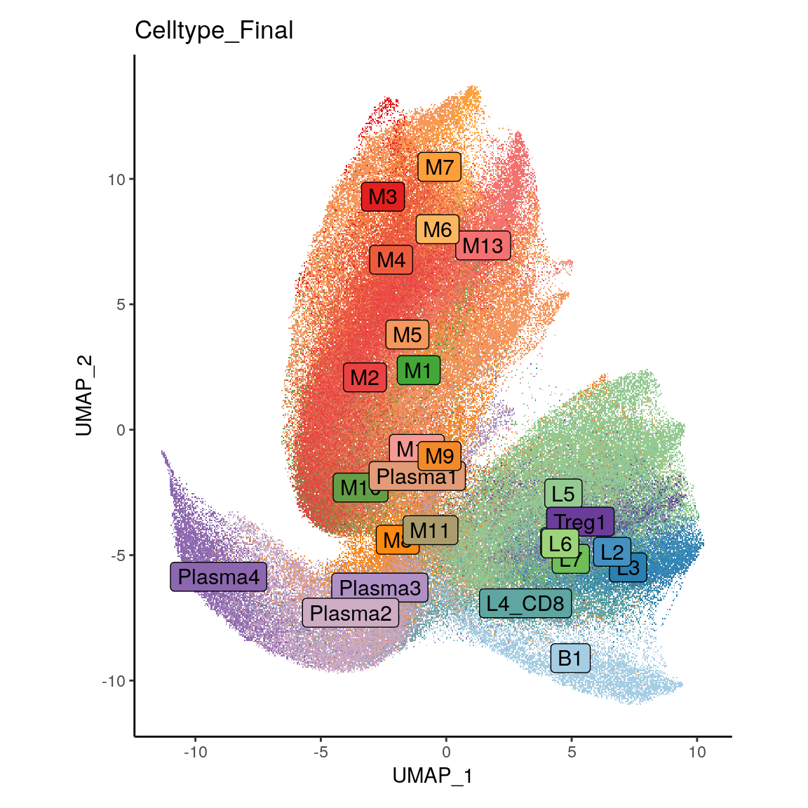
FeaturePlot(immune,
features = c("nCount_RNA", "nFeature_RNA", "total_counts",
"cell_area", "nucleus_area", "nucleus_count"),
cols = c("gray98", "tomato3"),
reduction = "umap",
raster = T,
ncol = 3) &
coord_fixed(ratio = 1) &
theme_bw()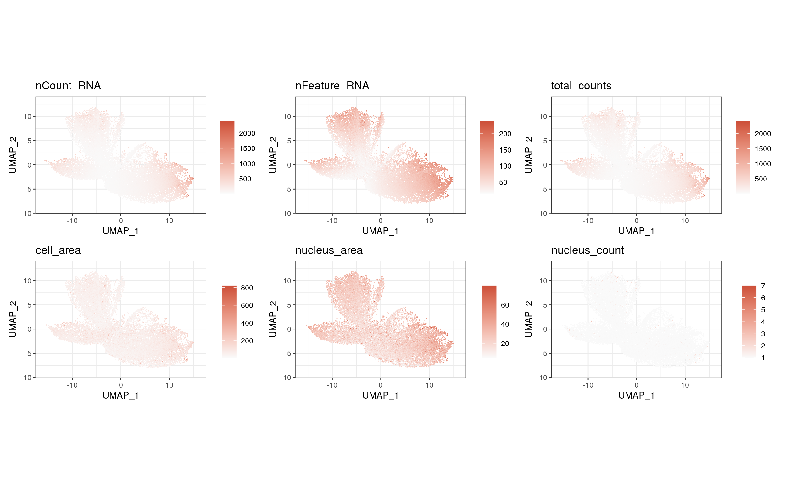
create_dotplot_heatmap(seurat_object = immune,
plot_features = main_plot_features,
group_var = "Celltype_Final",
group_colors = celltype_final_col,
column_title = "",
row_km = 12,
col_km = 5,
row.order = NULL,
col.order = NULL)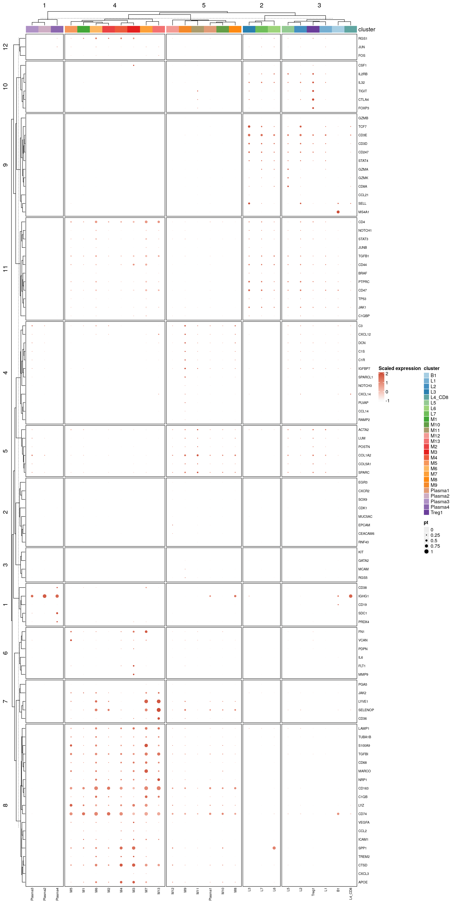
create_dotplot_heatmap(seurat_object = immune,
plot_features = unique(markers[which(markers$Annotation4 == "Immune"),]$Gene),
group_var = "Celltype_Final",
group_colors = celltype_final_col,
column_title = "",
row_km = 12,
col_km = 5,
row.order = NULL,
col.order = NULL)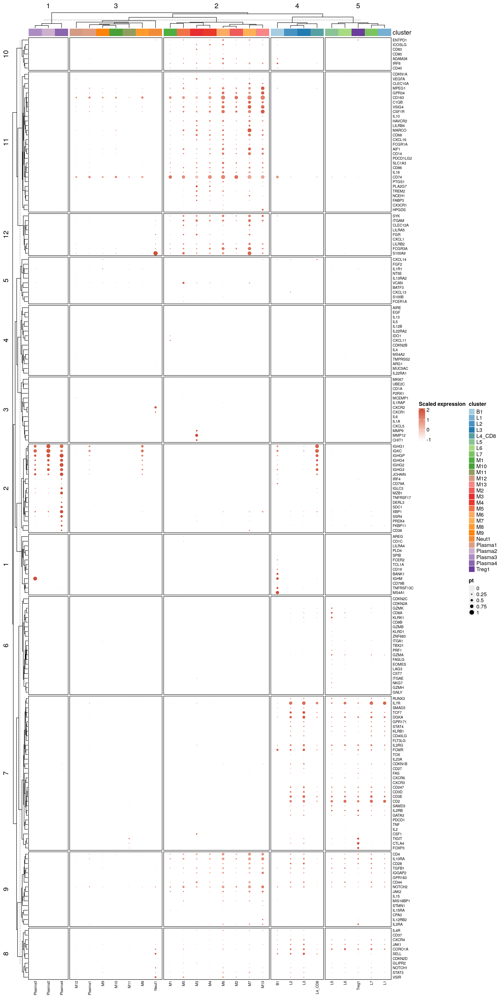
DotPlot(immune,
group.by = "Celltype_Final",
features = unique(markers_by_group[which(markers_by_group$annotation1 == "Cell-cell crosstalk"),]$feature),
cols = c("azure", "tomato3")) +
RotatedAxis() +
ggtitle("Cell-cell crosstalk")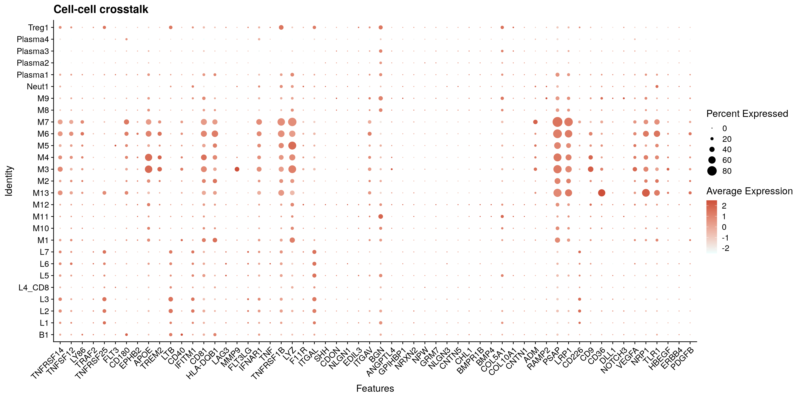
DotPlot(immune,
group.by = "Celltype_Final",
features = unique(markers_by_group[which(markers_by_group$annotation1 == "DNA damage and cell faith"),]$feature),
cols = c("azure", "tomato3")) +
RotatedAxis() +
ggtitle("DNA damage and cell faith")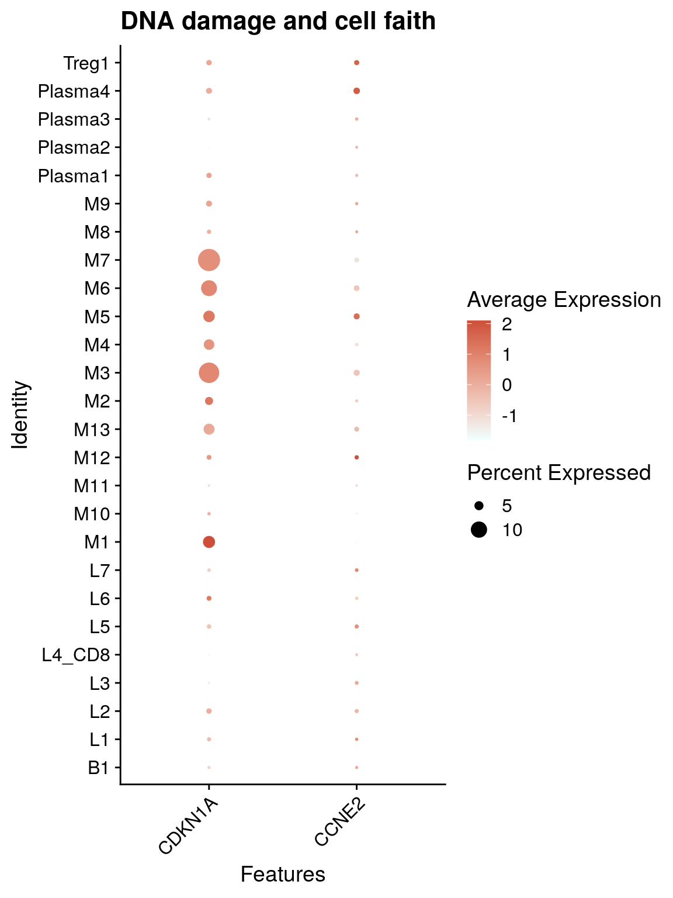
DotPlot(immune,
group.by = "Celltype_Final",
features = unique(markers_by_group[which(markers_by_group$annotation1 == "Functional markers"),]$feature),
cols = c("azure", "tomato3")) +
RotatedAxis() +
ggtitle("Functional markers")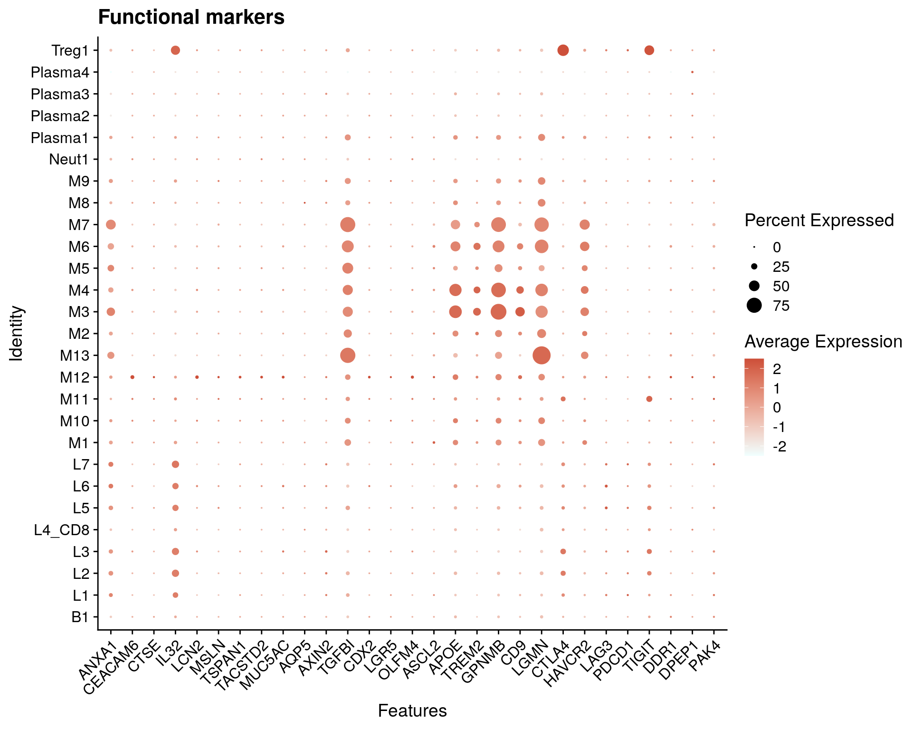
DotPlot(immune,
group.by = "Celltype_Final",
features = unique(markers_by_group[which(markers_by_group$annotation1 == "Macrophage signaling"),]$feature),
cols = c("azure", "tomato3")) +
RotatedAxis() +
ggtitle("Macrophage signaling")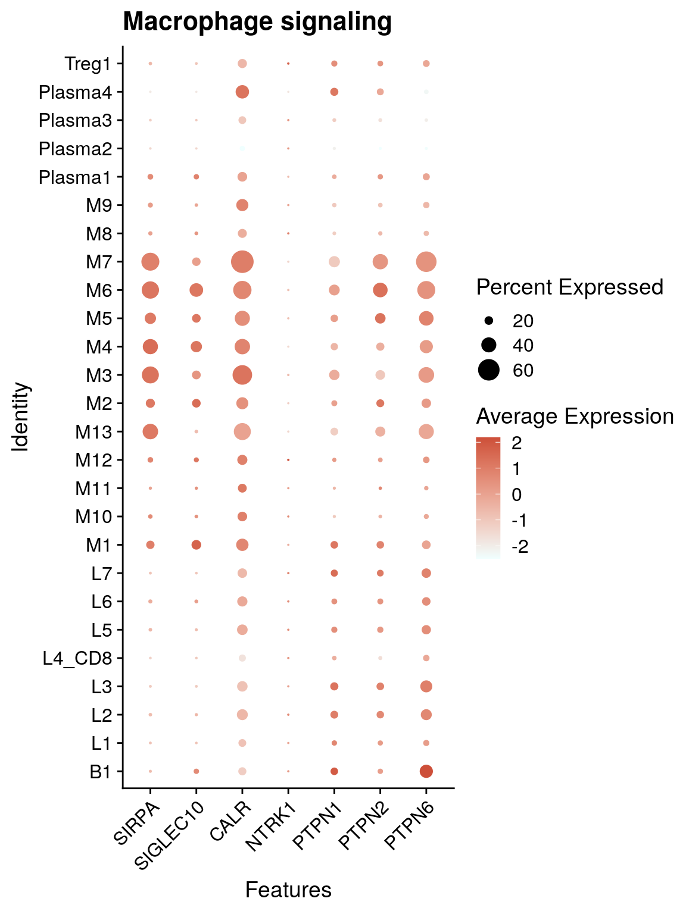
DotPlot(immune,
group.by = "Celltype_Final",
features = unique(markers_by_group[which(markers_by_group$annotation1 == "Macrophages"),]$feature),
cols = c("azure", "tomato3")) +
RotatedAxis() +
ggtitle("Macrophages")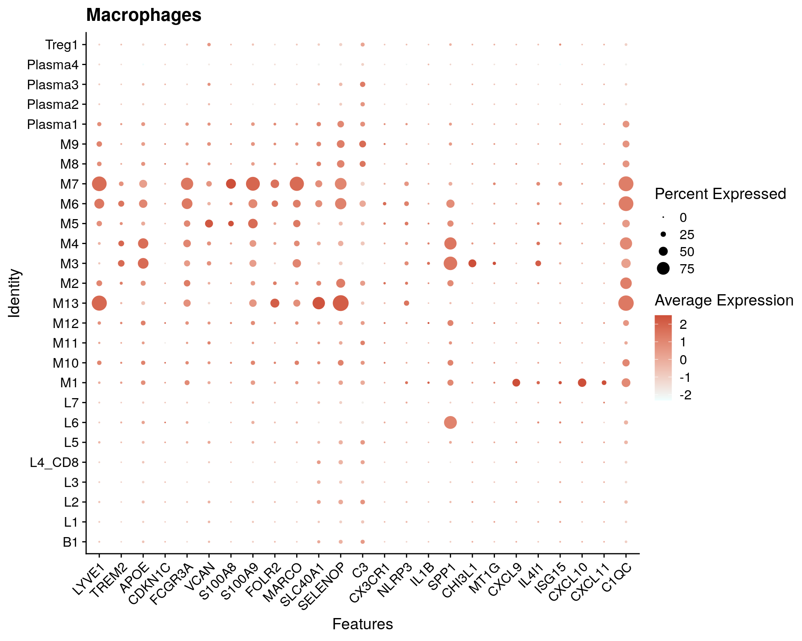
s.genes <- cc.genes.updated.2019$s.genes
g2m.genes <- cc.genes.updated.2019$g2m.genes
DotPlot(immune,
group.by = "Celltype_Final",
features = c(s.genes, g2m.genes),
cols = c("azure", "tomato3")) +
RotatedAxis() +
ggtitle("S/G2M genes")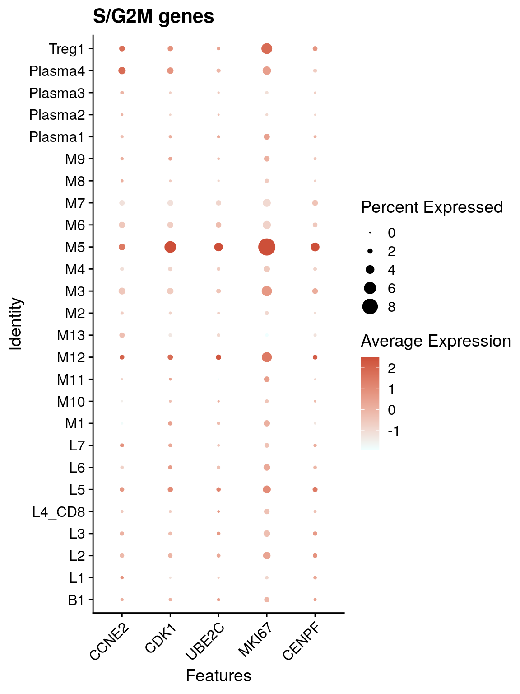
seurat_arm3 <- subset(immune, subset = Arm == "Arm3")
seurat_arm3 <- seurat_arm3 %>%
NormalizeData() %>%
ScaleData()
ncol(seurat_arm3)[1] 27475table(seurat_arm3$Celltype_Final)
B1 L1 L2 L3 L4_CD8 L5 L6 L7 M1 M10
636 115 592 326 57 5146 10 315 135 660
M11 M12 M13 M2 M3 M4 M5 M6 M7 M8
51 436 6126 3598 93 806 3149 1174 1169 382
M9 Plasma1 Plasma2 Plasma3 Plasma4 Treg1
806 245 241 154 859 194 Keeping cell types with >500 cells in arm 3
keeps <- table(seurat_arm3$Celltype_Final) %>%
as.data.frame() %>%
filter(Freq> 500)
seurat_arm3_subset <- subset(seurat_arm3, subset = Celltype_Final %in% keeps$Var1)
table(seurat_arm3_subset$Celltype_Final)
B1 L2 L5 M10 M13 M2 M4 M5 M6 M7
636 592 5146 660 6126 3598 806 3149 1174 1169
M9 Plasma4
806 859 table(seurat_arm3_subset$Celltype_Final, seurat_arm3_subset$Tissue)
Normal Tumor
B1 386 250
L2 252 340
L5 1637 3509
M10 298 362
M13 3115 3011
M2 1029 2569
M4 40 766
M5 1256 1893
M6 236 938
M7 505 664
M9 293 513
Plasma4 37 822create_barplot(seurat_arm3_subset,
group_var = "Sample",
plot_var = "Celltype_Final",
plot_levels = sort((unique(seurat_arm3_subset$Celltype_Final))),
group_levels = sort(unique(seurat_arm3_subset$Sample)),
plot_colors = celltype_final_col,
var_names = c("Frequency (%)", ""),
legend_title = "Celltype")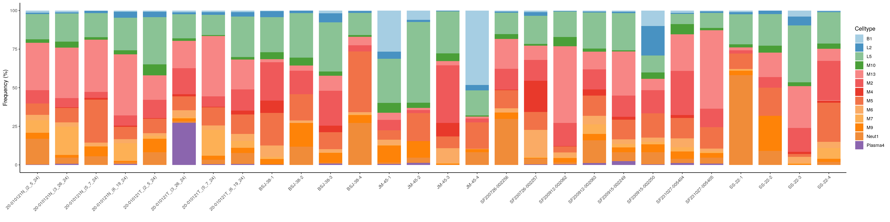
seurat_arm3_subset$Tissue_Timepoint <- paste0(seurat_arm3_subset$Tissue, "_",
seurat_arm3_subset$Timepoint)
create_barplot(seurat_arm3_subset,
group_var = "Tissue_Timepoint",
plot_var = "Celltype_Final",
plot_levels = sort((unique(seurat_arm3_subset$"Celltype_Final"))),
group_levels = sort(unique(seurat_arm3_subset$Tissue_Timepoint)),
plot_colors = celltype_final_col,
var_names = c("Frequency (%)", ""),
legend_title = "Celltype")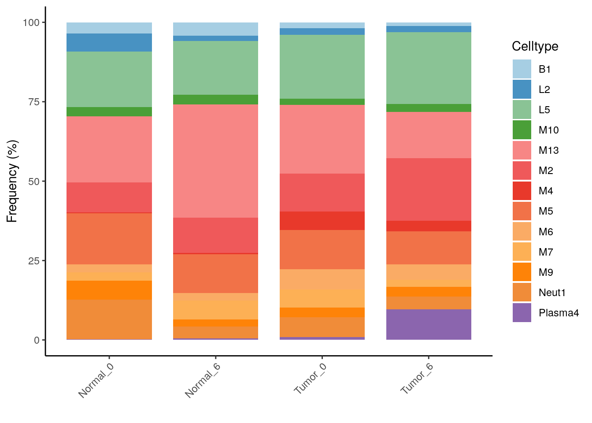
create_barplot(subset(seurat_arm3_subset, subset = Tissue == "Tumor"),
group_var = "Timepoint",
plot_var = "Celltype_Final",
plot_levels = sort((unique(seurat_arm3_subset$"Celltype_Final"))),
group_levels = sort(unique(seurat_arm3_subset$Timepoint)),
plot_colors = celltype_final_col,
var_names = c("Frequency (%)", ""),
legend_title = "Celltype")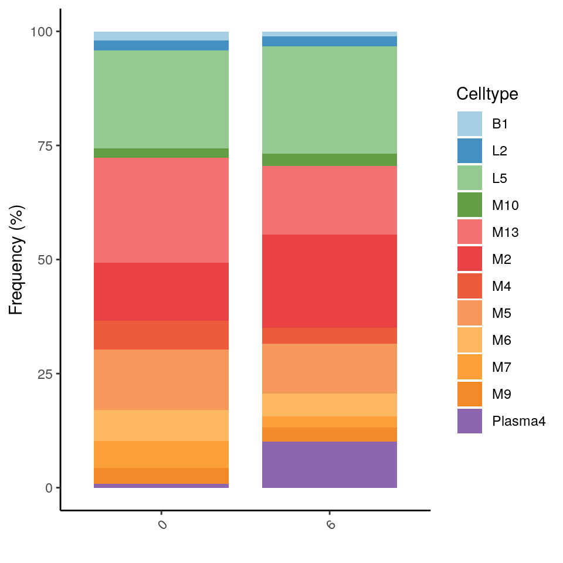
prop_test <- sc_utils(subset(seurat_arm3_subset, subset = Tissue == "Tumor"))
prop_test <- permutation_test(
prop_test, cluster_identity = "Celltype_Final",
sample_1 = "0", sample_2 = "6",
sample_identity = "Timepoint")
permutation_plot(prop_test)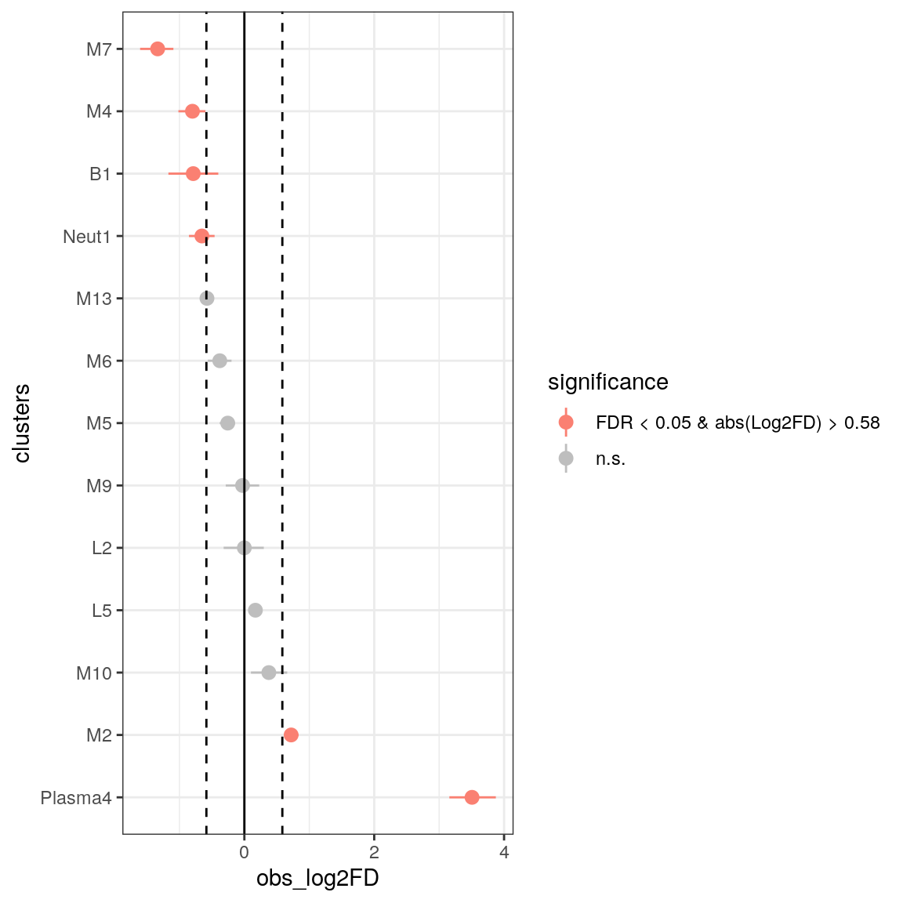
create_barplot(subset(seurat_arm3_subset, subset = Tissue == "Normal"),
group_var = "Timepoint",
plot_var = "Celltype_Final",
plot_levels = sort((unique(seurat_arm3$"Celltype_Final"))),
group_levels = sort(unique(seurat_arm3$Timepoint)),
plot_colors = celltype_final_col,
var_names = c("Frequency (%)", ""),
legend_title = "Celltype")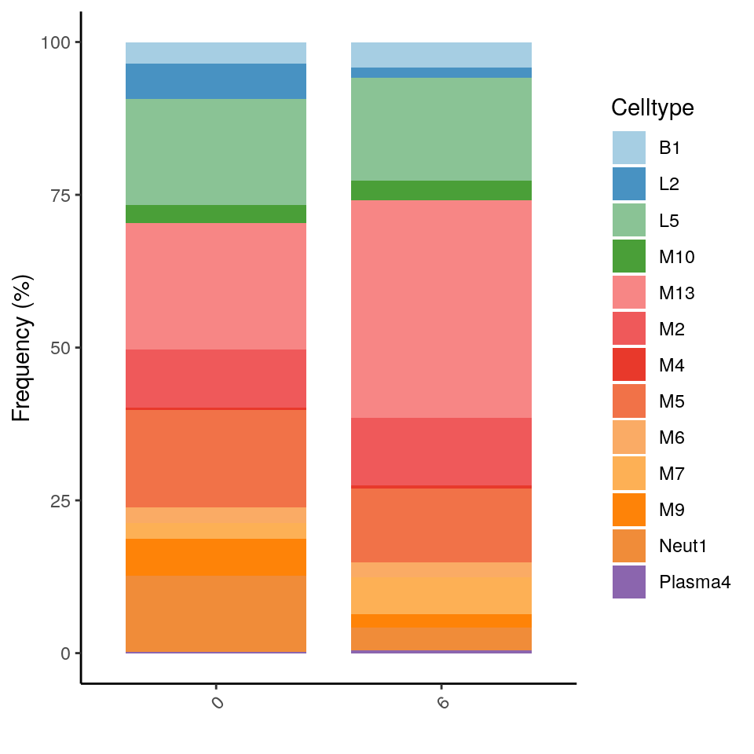
prop_test <- sc_utils(subset(seurat_arm3_subset, subset = Tissue == "Normal"))
prop_test <- permutation_test(
prop_test, cluster_identity = "Celltype_Final",
sample_1 = "0", sample_2 = "6",
sample_identity = "Timepoint")
permutation_plot(prop_test)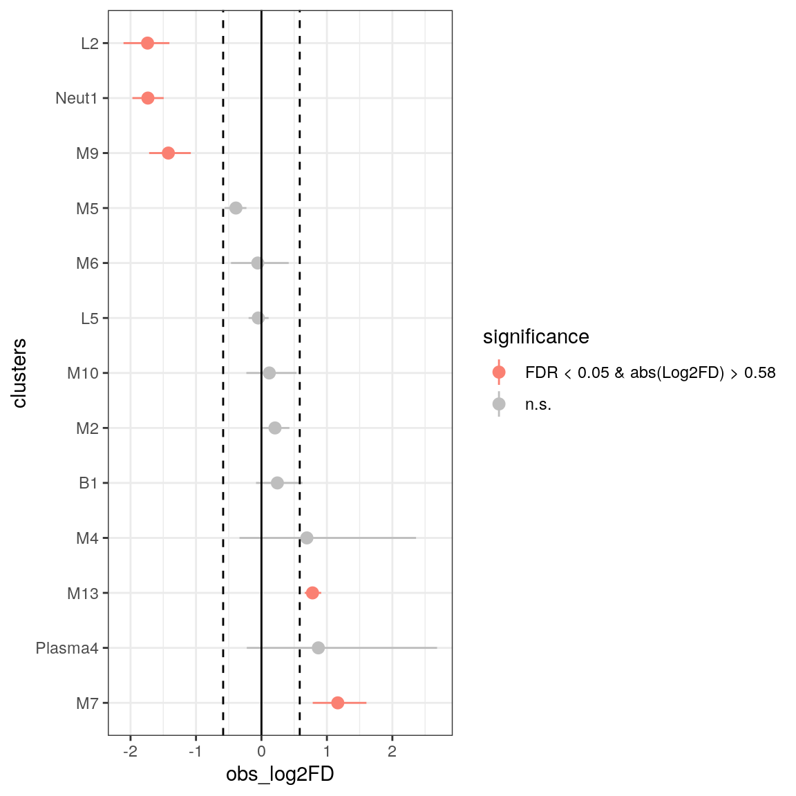
create_barplot(subset(seurat_arm3_subset, subset = Timepoint == "0"),
group_var = "Tissue",
plot_var = "Celltype_Final",
plot_levels = sort((unique(seurat_arm3$"Celltype_Final"))),
group_levels = sort(unique(seurat_arm3$Tissue)),
plot_colors = celltype_final_col,
var_names = c("Frequency (%)", ""),
legend_title = "Celltype")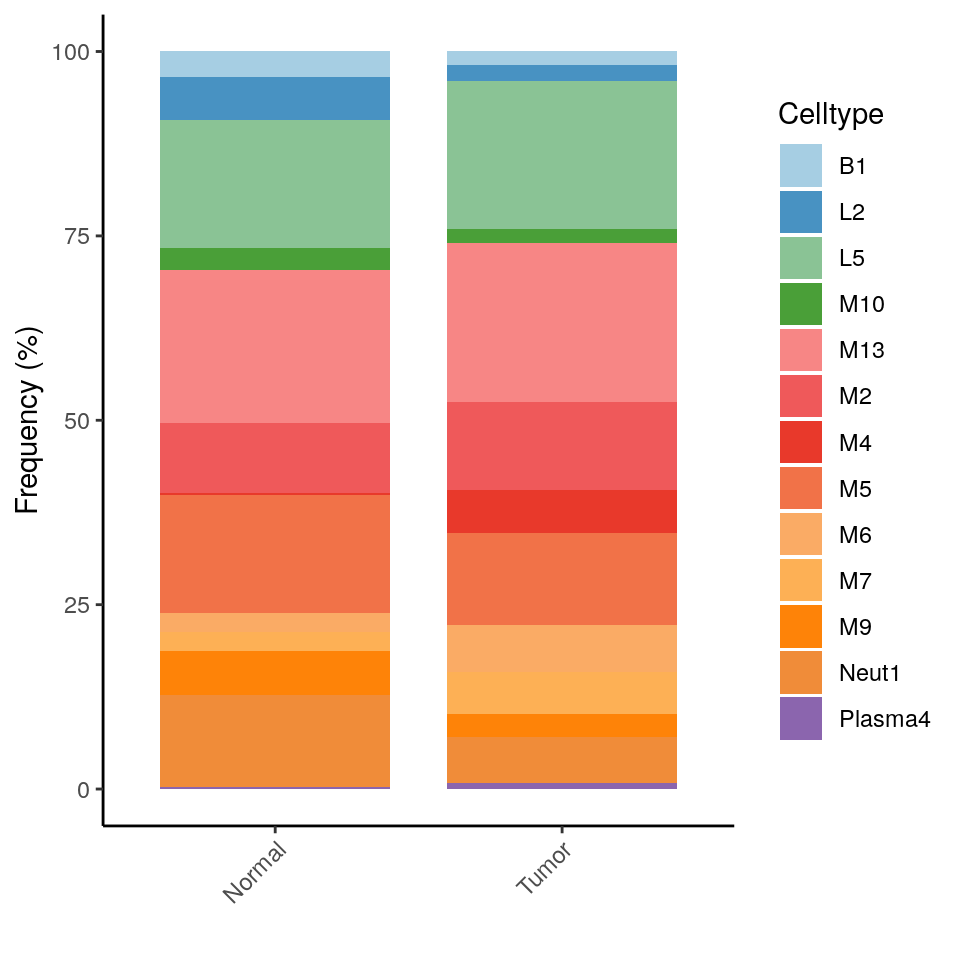
prop_test <- sc_utils(subset(seurat_arm3_subset, subset = Timepoint == "0"))
prop_test <- permutation_test(
prop_test, cluster_identity = "Celltype_Final",
sample_1 = "Normal", sample_2 = "Tumor",
sample_identity = "Tissue")
permutation_plot(prop_test)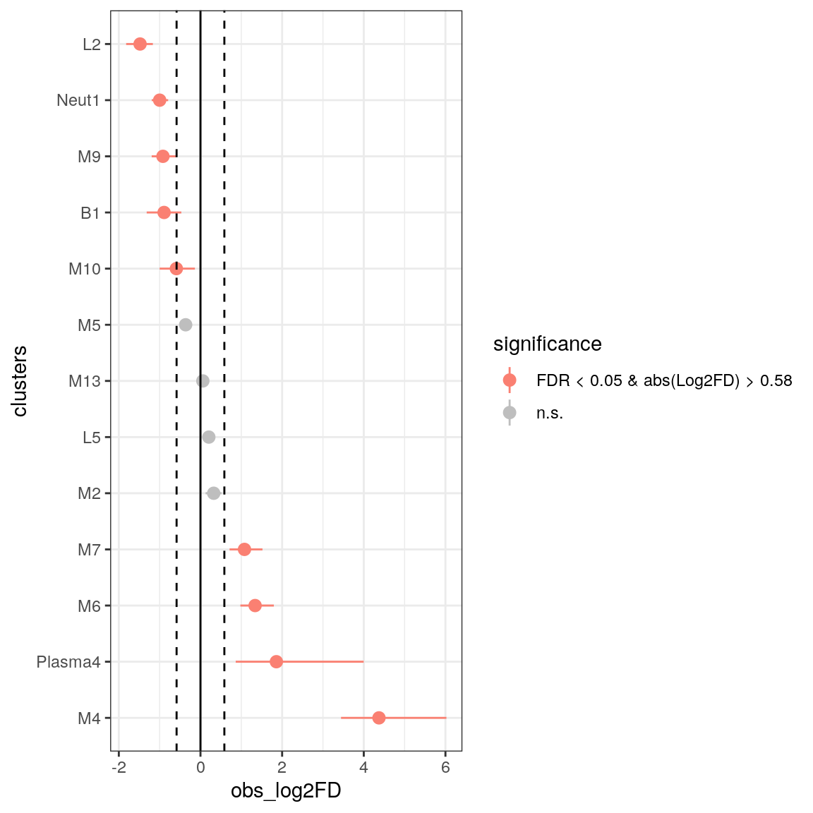
create_barplot(subset(seurat_arm3_subset, subset = Timepoint == "6"),
group_var = "Tissue",
plot_var = "Celltype_Final",
plot_levels = sort((unique(seurat_arm3_subset$"Celltype_Final"))),
group_levels = sort(unique(seurat_arm3_subset$Tissue)),
plot_colors = celltype_final_col,
var_names = c("Frequency (%)", ""),
legend_title = "Celltype")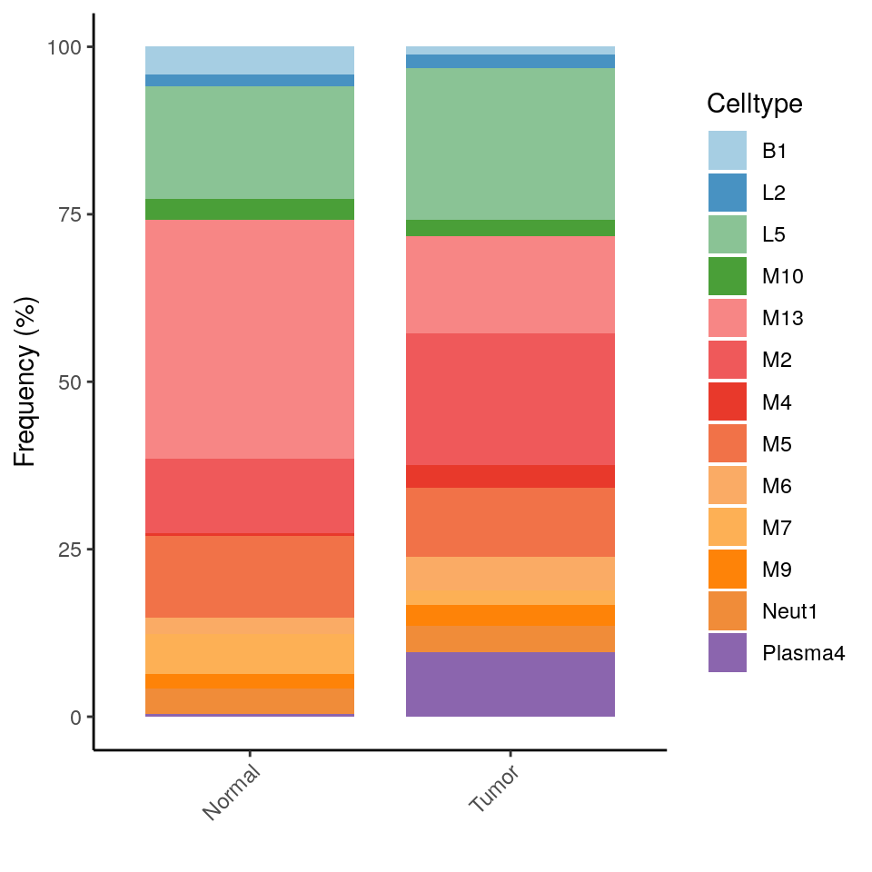
prop_test <- sc_utils(subset(seurat_arm3_subset, subset = Timepoint == "6"))
prop_test <- permutation_test(
prop_test, cluster_identity = "Celltype_Final",
sample_1 = "Normal", sample_2 = "Tumor",
sample_identity = "Tissue")
permutation_plot(prop_test)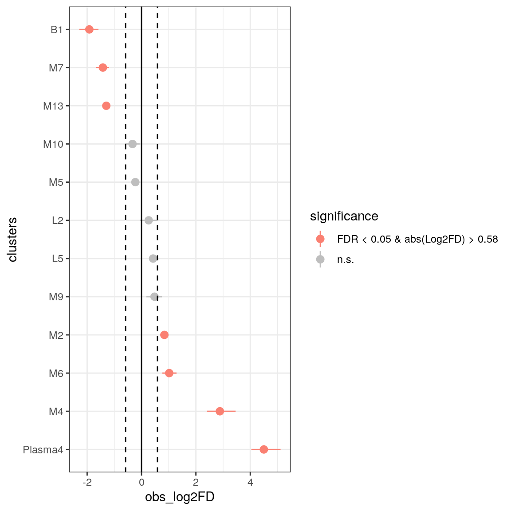
lymph <- grep("^L", sort(unique(seurat_data$Celltype_Final)), value = T)
plasma <- grep("^Plasma", sort(unique(seurat_data$Celltype_Final)), value = T)
lymph <- c(lymph, plasma, c("B1", "Treg1"))
myel <- grep("^M", sort(unique(seurat_data$Celltype_Final)), value = T)
Idents(seurat_arm3) <- seurat_arm3$Timepoint
deg_res <- FindMarkers(subset(seurat_arm3, subset = Tissue == "Tumor" & Celltype_Final %in% lymph),
ident.1 = "0",
ident.2 = "6",
assay = "RNA",
verbose = F)
deg_res$feature <- rownames(deg_res)
deg_res_sig <- deg_res %>%
mutate_if(is.numeric, ~round(., 2)) %>%
filter(abs(avg_log2FC) > 1 & p_val_adj < 0.05)
deg_res_sig p_val avg_log2FC pct.1 pct.2 p_val_adj feature
IGHG2 0 -3.07 0.07 0.29 0.00 IGHG2
MZB1 0 -3.66 0.06 0.27 0.00 MZB1
IGHGP 0 -2.77 0.08 0.30 0.00 IGHGP
SDC1 0 -2.45 0.05 0.22 0.00 SDC1
IGLC3 0 -1.66 0.03 0.19 0.00 IGLC3
JCHAIN 0 -1.63 0.12 0.32 0.00 JCHAIN
CD38 0 -2.55 0.10 0.27 0.00 CD38
IGHG1 0 -1.80 0.12 0.29 0.00 IGHG1
JUN 0 -1.39 0.18 0.36 0.00 JUN
TNFRSF17 0 -2.49 0.03 0.15 0.00 TNFRSF17
FKBP11 0 -1.40 0.24 0.39 0.00 FKBP11
DERL3 0 -1.72 0.03 0.15 0.00 DERL3
XBP1 0 -1.31 0.37 0.50 0.00 XBP1
PRDX4 0 -1.52 0.17 0.31 0.00 PRDX4
CD180 0 -1.36 0.07 0.20 0.00 CD180
IRF4 0 -1.22 0.08 0.19 0.00 IRF4
MKI67 0 -1.87 0.03 0.11 0.00 MKI67
ENTPD1 0 -1.08 0.10 0.21 0.00 ENTPD1
CDK1 0 -1.84 0.02 0.08 0.00 CDK1
P2RX1 0 -1.32 0.01 0.06 0.00 P2RX1
IL1B 0 -2.94 0.00 0.03 0.00 IL1B
FOS 0 -1.01 0.03 0.07 0.00 FOS
CXCL9 0 2.27 0.03 0.00 0.00 CXCL9
REG4 0 3.35 0.02 0.00 0.00 REG4
MS4A1 0 1.14 0.11 0.06 0.00 MS4A1
CXCL13 0 2.17 0.02 0.01 0.00 CXCL13
GNLY 0 1.50 0.06 0.03 0.00 GNLY
CXCR5 0 1.52 0.04 0.02 0.00 CXCR5
CEACAM6 0 1.74 0.01 0.00 0.00 CEACAM6
RGS5 0 1.31 0.08 0.05 0.00 RGS5
MSLN 0 1.39 0.01 0.00 0.00 MSLN
PAX5 0 1.26 0.03 0.02 0.00 PAX5
BANK1 0 1.03 0.07 0.05 0.02 BANK1
CEACAM8 0 1.40 0.03 0.01 0.02 CEACAM8VlnPlot(subset(seurat_arm3, subset = Tissue == "Tumor" & Celltype_Final %in% lymph),
group.by = "Timepoint",
features = deg_res_sig$feature,
pt.size = 0,
ncol = 5) &
theme_bw() &
NoLegend() &
xlab("")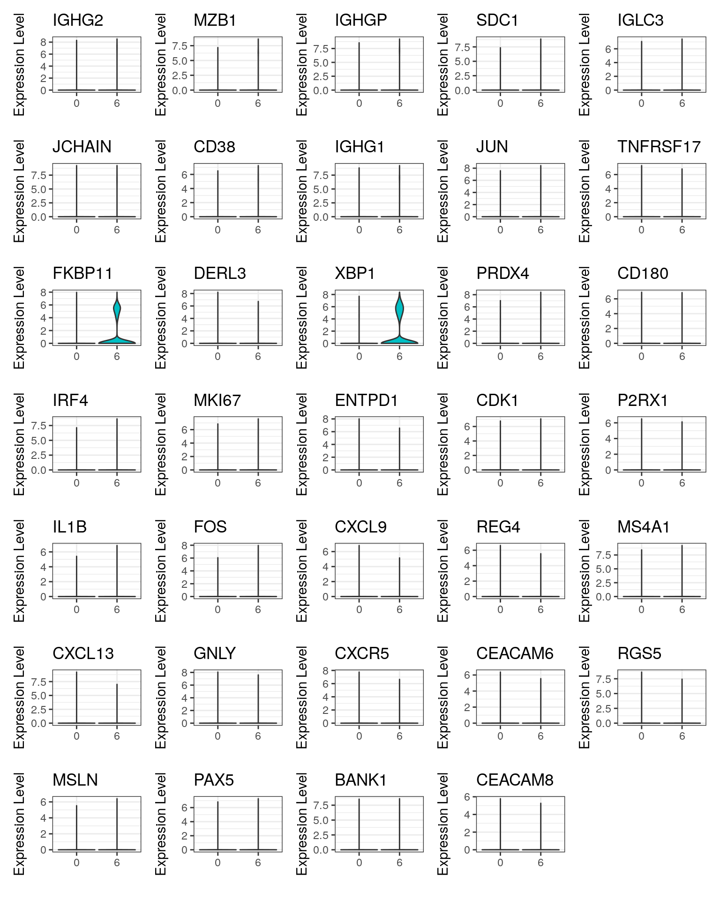
Idents(seurat_arm3) <- seurat_arm3$Timepoint
deg_res <- FindMarkers(subset(seurat_arm3, subset = Tissue == "Tumor" & Celltype_Final %in% myel),
ident.1 = "0",
ident.2 = "6",
assay = "RNA",
verbose = F)
deg_res$feature <- rownames(deg_res)
deg_res_sig <- deg_res %>%
mutate_if(is.numeric, ~round(., 2)) %>%
filter(abs(avg_log2FC) > 1 & p_val_adj < 0.05)
deg_res_sig p_val avg_log2FC pct.1 pct.2 p_val_adj feature
REG4 0 5.03 0.10 0.00 0 REG4
CEACAM6 0 4.20 0.08 0.00 0 CEACAM6
JUN 0 -1.33 0.26 0.39 0 JUN
SLC1A3 0 -1.19 0.34 0.44 0 SLC1A3
CEACAM1 0 2.22 0.08 0.01 0 CEACAM1
EPCAM 0 2.69 0.07 0.01 0 EPCAM
KLRK1 0 1.22 0.10 0.03 0 KLRK1
CEACAM8 0 2.04 0.06 0.01 0 CEACAM8
TFF3 0 3.25 0.05 0.00 0 TFF3
CCL3 0 -1.70 0.03 0.07 0 CCL3
IGHG2 0 -3.18 0.01 0.03 0 IGHG2
TSPAN1 0 1.46 0.03 0.01 0 TSPAN1
IGHGP 0 -3.15 0.01 0.04 0 IGHGP
CDKN2B 0 1.06 0.05 0.02 0 CDKN2B
CCL3L1 0 -1.04 0.04 0.07 0 CCL3L1
MZB1 0 -2.83 0.00 0.02 0 MZB1
CCL13 0 -1.28 0.17 0.21 0 CCL13
CCL8 0 -1.41 0.04 0.07 0 CCL8
MMP12 0 -3.31 0.01 0.02 0 MMP12
CHIT1 0 -2.80 0.01 0.03 0 CHIT1
TACSTD2 0 1.30 0.02 0.01 0 TACSTD2
MMP11 0 1.50 0.02 0.01 0 MMP11
JCHAIN 0 -1.62 0.03 0.05 0 JCHAIN
IGHG1 0 -1.58 0.02 0.03 0 IGHG1
MMP9 0 -2.02 0.01 0.02 0 MMP9
MUC5AC 0 1.26 0.01 0.00 0 MUC5AC
CHI3L1 0 -1.93 0.02 0.04 0 CHI3L1
AREG 0 -1.04 0.02 0.03 0 AREGVlnPlot(subset(seurat_arm3, subset = Tissue == "Tumor" & Celltype_Final %in% myel),
group.by = "Timepoint",
features = deg_res_sig$feature,
pt.size = 0,
ncol = 5) &
theme_bw() &
NoLegend() &
xlab("")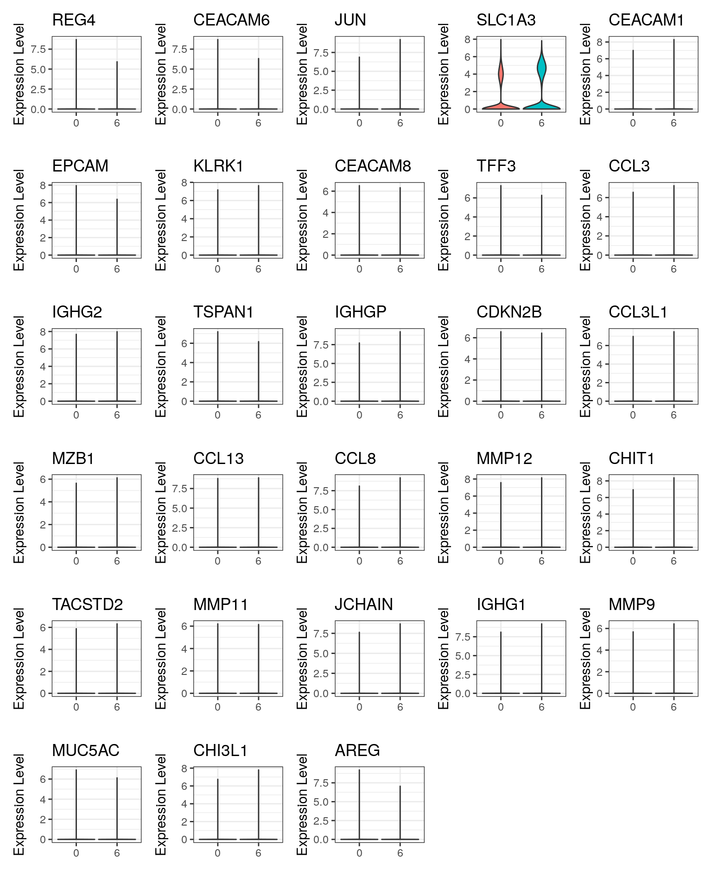
Idents(seurat_arm3) <- seurat_arm3$Timepoint
deg_res <- FindMarkers(subset(seurat_arm3, subset = Tissue == "Normal" & Celltype_Final %in% lymph),
ident.1 = "0",
ident.2 = "6",
assay = "RNA",
verbose = F)
deg_res$feature <- rownames(deg_res)
deg_res_sig <- deg_res %>%
mutate_if(is.numeric, ~round(., 2)) %>%
filter(abs(avg_log2FC) > 1 & p_val_adj < 0.05)
deg_res_sig p_val avg_log2FC pct.1 pct.2 p_val_adj feature
CCL19 0 3.63 0.18 0.03 0.00 CCL19
NELL2 0 1.51 0.23 0.10 0.00 NELL2
JUN 0 -1.77 0.13 0.29 0.00 JUN
CCL21 0 1.82 0.10 0.03 0.00 CCL21
POSTN 0 -2.82 0.03 0.13 0.00 POSTN
CXCL13 0 2.06 0.09 0.03 0.00 CXCL13
CCL13 0 -1.67 0.05 0.15 0.00 CCL13
LILRA4 0 2.17 0.07 0.01 0.00 LILRA4
RGS1 0 -1.30 0.17 0.29 0.00 RGS1
IDO1 0 2.13 0.07 0.02 0.00 IDO1
PLVAP 0 1.96 0.07 0.02 0.00 PLVAP
MMP9 0 3.47 0.02 0.00 0.00 MMP9
LAMP3 0 1.64 0.05 0.02 0.00 LAMP3
FCGR3A 0 -1.05 0.03 0.08 0.00 FCGR3A
LYZ 0 1.02 0.21 0.14 0.00 LYZ
FN1 0 -1.73 0.04 0.09 0.00 FN1
FCER1A 0 1.52 0.03 0.01 0.00 FCER1A
TCL1A 0 1.23 0.07 0.04 0.00 TCL1A
CXCL9 0 1.30 0.05 0.02 0.01 CXCL9
MARCO 0 -1.60 0.03 0.07 0.01 MARCOVlnPlot(subset(seurat_arm3, subset = Tissue == "Normal" & Celltype_Final %in% lymph),
group.by = "Timepoint",
features = deg_res_sig$feature,
pt.size = 0,
ncol = 5) &
theme_bw() &
NoLegend() &
xlab("")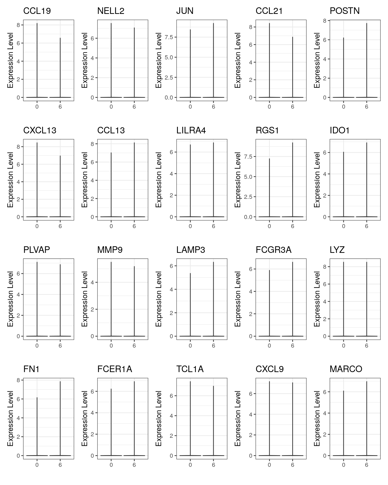
deg_res <- FindMarkers(subset(seurat_arm3, subset = Tissue == "Normal" & Celltype_Final %in% myel),
ident.1 = "0",
ident.2 = "6",
assay = "RNA",
verbose = F)
deg_res$feature <- rownames(deg_res)
deg_res_sig <- deg_res %>%
mutate_if(is.numeric, ~round(., 2)) %>%
filter(abs(avg_log2FC) > 1 & p_val_adj < 0.05)
deg_res_sig p_val avg_log2FC pct.1 pct.2 p_val_adj feature
CCL13 0 -1.78 0.25 0.54 0.00 CCL13
FCGR3A 0 -1.31 0.22 0.49 0.00 FCGR3A
SLC40A1 0 -1.06 0.47 0.68 0.00 SLC40A1
LILRB4 0 -1.03 0.10 0.20 0.00 LILRB4
SPARCL1 0 1.17 0.28 0.18 0.00 SPARCL1
PLVAP 0 1.45 0.10 0.05 0.00 PLVAP
GPR183 0 -1.61 0.06 0.14 0.00 GPR183
FN1 0 -1.30 0.13 0.22 0.00 FN1
KLRK1 0 1.24 0.08 0.04 0.00 KLRK1
SOX17 0 2.37 0.04 0.01 0.00 SOX17
CD34 0 1.28 0.15 0.09 0.00 CD34
FLT1 0 1.62 0.10 0.05 0.00 FLT1
DCN 0 1.09 0.41 0.36 0.00 DCN
CCR2 0 1.12 0.10 0.06 0.00 CCR2
MCAM 0 1.36 0.08 0.04 0.00 MCAM
ITGA1 0 1.06 0.06 0.03 0.00 ITGA1
ID1 0 1.89 0.03 0.01 0.00 ID1
NOTCH3 0 1.53 0.06 0.03 0.00 NOTCH3
CCNE2 0 1.52 0.05 0.03 0.00 CCNE2
MCEMP1 0 2.10 0.03 0.01 0.00 MCEMP1
CDK1 0 1.23 0.04 0.02 0.00 CDK1
G0S2 0 1.80 0.04 0.02 0.00 G0S2
CXCL9 0 -2.37 0.00 0.02 0.01 CXCL9
RGS5 0 1.67 0.07 0.04 0.01 RGS5
CXCL1 0 -1.09 0.02 0.04 0.02 CXCL1
FCER1A 0 1.26 0.06 0.04 0.02 FCER1AVlnPlot(subset(seurat_arm3, subset = Tissue == "Normal" & Celltype_Final %in% myel),
group.by = "Timepoint",
features = deg_res_sig$feature,
pt.size = 0,
ncol = 5) &
theme_bw() &
NoLegend() &
xlab("")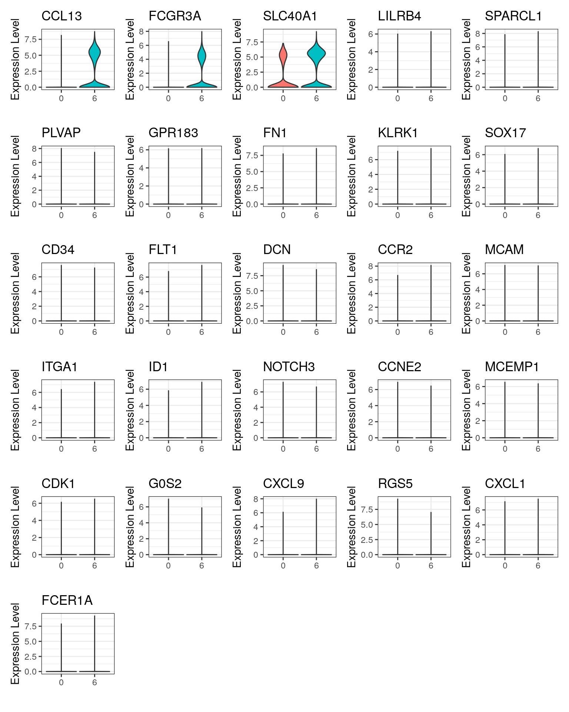
VlnPlot(immune,
features = c("nCount_RNA", "nCount_cell_RNA", "nFeature_RNA",
"nFeature_cell_RNA", "transcript_counts", "cell_area",
"nucleus_area", "nucleus_count"),
group.by = "Celltype_Final",
pt.size = 0,
ncol = 1,
cols = celltype_final_col) &
theme_minimal() &
RotatedAxis() &
NoLegend()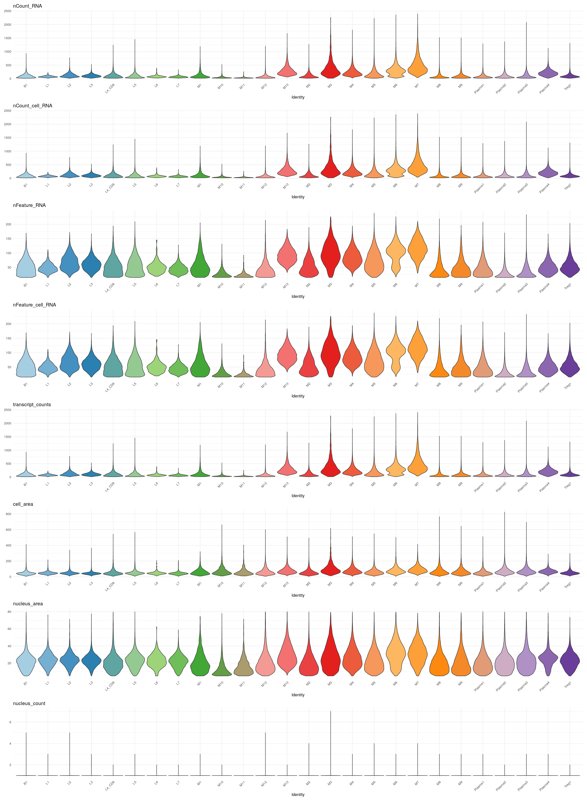
ct_table <- as.data.frame(table(immune$Celltype_Final))
colnames(ct_table) <- c("Celltype_Final", "Freq")
min(ct_table$Freq)[1] 285ggplot(ct_table, aes(x = reorder(Celltype_Final, -Freq), y = Freq, fill = Celltype_Final)) +
geom_bar(stat="identity", position='stack', width = 0.8) +
scale_fill_manual(name = "Celltype_Final", values = celltype_final_col) +
xlab("") +
ylab("Cell count") +
theme_classic() +
theme(axis.text.x = element_text(angle = 45, vjust = 1, hjust=1)) +
NoLegend()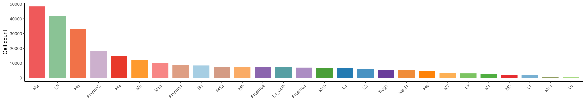
sessionInfo()R version 4.3.0 (2023-04-21)
Platform: x86_64-pc-linux-gnu (64-bit)
Running under: Ubuntu 22.04.3 LTS
Matrix products: default
BLAS: /usr/lib/x86_64-linux-gnu/openblas-pthread/libblas.so.3
LAPACK: /usr/lib/x86_64-linux-gnu/openblas-pthread/libopenblasp-r0.3.20.so; LAPACK version 3.10.0
locale:
[1] LC_CTYPE=en_US.UTF-8 LC_NUMERIC=C
[3] LC_TIME=en_US.UTF-8 LC_COLLATE=en_US.UTF-8
[5] LC_MONETARY=en_US.UTF-8 LC_MESSAGES=en_US.UTF-8
[7] LC_PAPER=en_US.UTF-8 LC_NAME=C
[9] LC_ADDRESS=C LC_TELEPHONE=C
[11] LC_MEASUREMENT=en_US.UTF-8 LC_IDENTIFICATION=C
time zone: Etc/UTC
tzcode source: system (glibc)
attached base packages:
[1] grid stats graphics grDevices utils datasets methods
[8] base
other attached packages:
[1] ComplexHeatmap_2.18.0 viridis_0.6.3
[3] viridisLite_0.4.2 circlize_0.4.15
[5] plyr_1.8.8 RColorBrewer_1.1-3
[7] scProportionTest_0.0.0.9000 ggpmisc_0.5.2
[9] ggpp_0.5.2 patchwork_1.1.2
[11] googlesheets4_1.1.0 ggrepel_0.9.3
[13] ggpubr_0.6.0 lubridate_1.9.2
[15] forcats_1.0.0 stringr_1.5.0
[17] dplyr_1.1.2 purrr_1.0.2
[19] readr_2.1.4 tidyr_1.3.0
[21] tibble_3.2.1 ggplot2_3.4.2
[23] tidyverse_2.0.0 SeuratDisk_0.0.0.9021
[25] Seurat_5.0.1 SeuratObject_5.0.2
[27] sp_1.6-1 workflowr_1.7.1
loaded via a namespace (and not attached):
[1] RcppAnnoy_0.0.20 splines_4.3.0 later_1.3.1
[4] cellranger_1.1.0 polyclip_1.10-4 fastDummies_1.7.3
[7] lifecycle_1.0.3 rstatix_0.7.2 doParallel_1.0.17
[10] rprojroot_2.0.3 globals_0.16.2 processx_3.8.1
[13] lattice_0.21-8 hdf5r_1.3.8 MASS_7.3-60
[16] backports_1.4.1 magrittr_2.0.3 limma_3.58.1
[19] plotly_4.10.2 sass_0.4.6 rmarkdown_2.22
[22] jquerylib_0.1.4 yaml_2.3.7 httpuv_1.6.11
[25] sctransform_0.4.1 spam_2.9-1 spatstat.sparse_3.0-1
[28] reticulate_1.30 cowplot_1.1.1 pbapply_1.7-0
[31] abind_1.4-5 Rtsne_0.16 presto_1.0.0
[34] BiocGenerics_0.48.1 git2r_0.32.0 S4Vectors_0.40.2
[37] IRanges_2.36.0 irlba_2.3.5.1 listenv_0.9.0
[40] spatstat.utils_3.0-3 MatrixModels_0.5-1 goftest_1.2-3
[43] RSpectra_0.16-1 spatstat.random_3.1-5 fitdistrplus_1.1-11
[46] parallelly_1.36.0 leiden_0.4.3 codetools_0.2-19
[49] shape_1.4.6 tidyselect_1.2.0 farver_2.1.1
[52] stats4_4.3.0 matrixStats_1.0.0 spatstat.explore_3.2-1
[55] googledrive_2.1.0 jsonlite_1.8.5 GetoptLong_1.0.5
[58] ellipsis_0.3.2 progressr_0.13.0 iterators_1.0.14
[61] ggridges_0.5.4 survival_3.5-5 foreach_1.5.2
[64] tools_4.3.0 ica_1.0-3 Rcpp_1.0.10
[67] glue_1.6.2 gridExtra_2.3 xfun_0.39
[70] withr_2.5.0 fastmap_1.1.1 fansi_1.0.4
[73] SparseM_1.81 callr_3.7.3 digest_0.6.31
[76] timechange_0.2.0 R6_2.5.1 mime_0.12
[79] colorspace_2.1-0 Cairo_1.6-0 scattermore_1.2
[82] tensor_1.5 spatstat.data_3.0-1 utf8_1.2.3
[85] generics_0.1.3 data.table_1.14.8 httr_1.4.6
[88] htmlwidgets_1.6.2 whisker_0.4.1 uwot_0.1.14
[91] pkgconfig_2.0.3 gtable_0.3.3 lmtest_0.9-40
[94] htmltools_0.5.5 carData_3.0-5 dotCall64_1.0-2
[97] clue_0.3-64 scales_1.2.1 png_0.1-8
[100] knitr_1.43 rstudioapi_0.14 rjson_0.2.21
[103] tzdb_0.4.0 reshape2_1.4.4 curl_5.0.1
[106] nlme_3.1-162 GlobalOptions_0.1.2 cachem_1.0.8
[109] zoo_1.8-12 KernSmooth_2.23-21 vipor_0.4.5
[112] parallel_4.3.0 miniUI_0.1.1.1 ggrastr_1.0.2
[115] pillar_1.9.0 vctrs_0.6.5 RANN_2.6.1
[118] promises_1.2.0.1 car_3.1-2 xtable_1.8-4
[121] cluster_2.1.4 beeswarm_0.4.0 evaluate_0.21
[124] magick_2.7.4 cli_3.6.1 compiler_4.3.0
[127] rlang_1.1.6 crayon_1.5.2 future.apply_1.11.0
[130] ggsignif_0.6.4 labeling_0.4.2 ps_1.7.5
[133] ggbeeswarm_0.7.2 getPass_0.2-4 fs_1.6.2
[136] stringi_1.7.12 deldir_1.0-9 munsell_0.5.0
[139] lazyeval_0.2.2 spatstat.geom_3.2-1 quantreg_5.95
[142] Matrix_1.6-5 RcppHNSW_0.5.0 hms_1.1.3
[145] bit64_4.6.0-1 future_1.32.0 statmod_1.5.0
[148] shiny_1.7.4 highr_0.10 ROCR_1.0-11
[151] gargle_1.4.0 igraph_1.4.3 broom_1.0.5
[154] bslib_0.5.0 bit_4.0.5 polynom_1.4-1